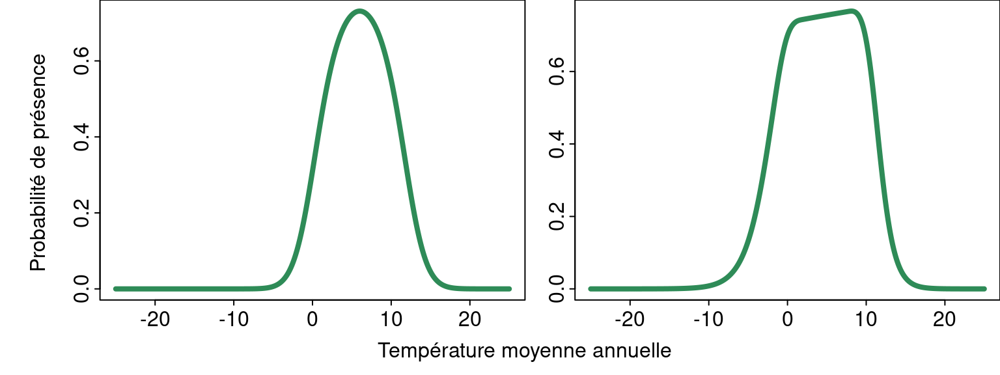
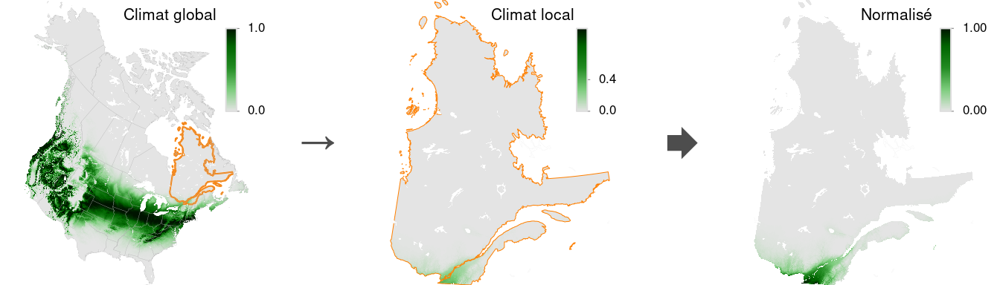
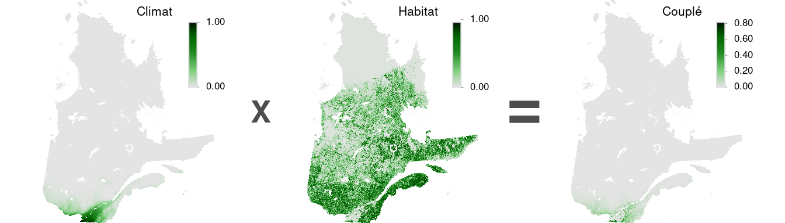

| Type | Nom | Échelle | Description |
|---|---|---|---|
| Climat | climatX2 | NA | Effet quadratique de la température moyenne annuelle |
| Climat | climatGAM | NA | Effet GAM contraint de la température moyenne annuelle |
| Habitat | habitatNA | NA | Variables d'habitat nord-américaine |
| Habitat | habitatQC | QC | Variables d'habitat Québécoise |
| Climat + habitat | climatX2 + habitatNA | NA | Variable de climat et d'habitat dans un modèle modèle évalué à l'échelle Nord Américaine |
| Couplés | climatX2 (habitatNA) | NA | Modèle d'habitat à l'échelle nord-américaine coupé par le modèle de climat à effet quadratique |
| Couplés | climatGAM (habitatNA) | NA | Modèle d'habitat à l'échelle nord-américaine coupé par le modèle de climat à effet GAM |
| Couplés | climatX2 (habitatQC) | QC | Modèle d'habitat à l'échelle québécois coupé par le modèle de climat à effet quadratique |
| Couplés | climatGAM (habitatQC) | QC | Modèle d'habitat à l'échelle québécois coupé par le modèle de climat à effet quadratique |
5 Modélisation
L’approche méthodologique utilisée repose sur plusieurs considérations et contraintes:
- intégration de variables d’habitats stables par rapport aux changements climatiques
- limitation de la complexité des modèles
- disponibilité des variables au niveau nord américain ou et québécois
- disponibilité de données d’occurrences précises au niveau nord américain
Les choix méthodologiques reflètent ces contraintes.
Premièrement, des variables non climatiques ont également été intégrées afin de donner plus de réalisme aux aires de répartition projetées. En effet, la distribution des espèces est influencée par beaucoup d’autres facteurs que seul les effets climatiques et il convient donc de tenir compte de ces autres facteurs pour modéliser les aires de distribution projetées. Une approche uniquement basée sur les niches climatiques risquerait de mal représenter les distributions futures (Liu et al. (2016)).
Nous avons également limité la complexité des modèles utilisés et notamment des relations permises entre les variables et la présence des espèces. En effet, certaines approches d’aprentissage machine communément utilisée ont été évités, car ces méthodes sont généralement très flexibles par rapport aux relations entre les variables et la présence des espèces. Dans un contexte de projections futures, il a été considéré qu’il était préférable de se limiter à des relations simples comme des relations linéaires ou quadratiques pour décrire les effets des variables sur le présence des espèces.
Afin de comparer différentes approches de modélisation, nous avons effectués plusieurs modèles (Tableau 5.1). Ces modèles peuvent être regroupés en 4 groupes:
- modèles basés sur le climat
- modèles basés sur l’habitat
- modèles combinant le climat et l’habitat au sein d’un même modèle
- modèles couplant un modèle de climat à un modèle d’habitat
Pour les modèles incluant des variables d’habitat, nous avons également utilisé deux échelles de modélisation:
- échelle globale en incluant des variables d’habitats mesurées à l’échelle nord américaine
- échelle locale en incuant des variables d’habitats mesurée à l’échelle du Québec
5.0.1 Modèles de climat
Tous les modèles avec une composante climat ont été effectuées à l’échelle nord-américaine afin de couvrir la majorité de l’aire de distribution des espèces et ainsi éviter le problème de troncation de la niche Guisan et al. (2025). En effet, le Québec représente une petite partie de l’aire de distribution de la majorité des espèces modélisées et il serait hasardeux d’établir les relations entre le climat et la présence des espèces sur une portion réduite des valeurs climatiques auxquelles ces espèces sont soumises sur le territoire québécois.
Deux modèles climatiques ont été effectués. Le premier est un modèle basé sur l’algorithme Maxent. Pour ce modèle, seuls des effets quadratiques de la température moyenne annuelle ont été utilisés (e.g. \(x + x^2\)). Afin de donner plus de flexibilité à la relation entre le climat et la présence de l’espèce, des modèles additifs à formes contraintes ont également été utilisés (Pya et Wood (2015), Citores et al. (2020)). Plus spécifiquement, des formes strictement concaves sont permises par une base “cv” (Figure 5.1).

5.0.2 Modèles d’habitat
Ces modèles ne sont pas d’intérêt en soi, car ils ne tiennent pas comptent de la niche climatique. Ils sont plutôt destinés à être couplés avec les modèles climatiques. Le modèle à l’échelle du Québec comporte 2 avantages:
il permet de prendre en compte certaines variables d’habitat qui ne sont facilement disponibles que pour le territoire québécois (e.g. SIGÉOM, Cartes écoforestières, Produits dérivés du lidar, Géobase du réseau hydrographique du Québec (GRHQ), etc.)
il permet d’utiliser une résolution plus élevée que celle utiliée à l’échelle nord-américaine
il permet d’obtenir un modèle d’habitat basé uniquement sur la réalité locale propre au Québec, i.e. que les relations entre les différentes variables et la présence des espèces dans des régions éloignées du Québec n’auront pas d’influence sur ce qui est prédit au Québec
5.0.3 Modèles de climat et habitat
Ce modèle est composé uniquement des données à l’échelle de l’Amérique du Nord. Il comporte à la fois les variables climatiques et d’habitat au sein d’un même modèle. Il s’agit de l’approche standard qui est généralement utilisée pour modéliser la distribution des espèces. Ce modèle ne peut être évalué à l’échelle du Québec, car car la niche climatique de l’espèce ne peut être établie qu’à l’échelle nord-américaine.
5.0.4 Modèles couplés
L’idée à la base des modèles couplés (Figure 5.2, Figure 5.3) est que les facteurs influençant la distribution des espèces dépendent de l’échelle à laquelle on s’intéresse. À grande échelle, les espèces ont généralement une région où les conditions climatiques sont favorables à leur présence. À plus fine échelle, les variables locales d’habitats (ou de microclimats) comme le type de couverture du sol ont probablement un plus grand impact sur la distribution des espèces (Pearson et Dawson (2003)) et seuls les habitats favorables à la présence de l’espèce peuvent être occupés. Les avantages d’un telle approche sont:
permet de coupler des modèles effectués à différentes échelles (e.g. un modèle climatique à grande échelle couplé à un modèle d’habitat à plus petit échelle)
permet d’isoler l’effet des variables climatiques de celui des variables d’habitats dans un contexte où les deux types de variables sont potentiellement spatialement corrélées et attribuer les variations en probabilité de présence ou d’abondance à grande échelle aux variables climatiques


5.1 Paramétrisation des modèles
Tous les modèles sauf le modèle de climat avec effets additifs contrait ont été effectués avec Maxent (Phillips et al. (2006)), une approche adaptée aux données opportunistes où seules les présences sont notées et où les absences ne sont pas répertoriées.
Le package predicts (Hijmans (2025)) a été utilisé pour les modèles effectués avec Maxent. Seuls les effets linéaires et quadratiques ont été utilisés. Pour les modèles de climat (climatX2), le facteur de pénalisation a été fixé à 0 (betaMultiplier = 0) afin de ne pas limiter l’ampleur de l’effet de la température. La valeur par défaut a été utilisée pour tous les autres modèles.
Les modèles lissés (climatGAM) ont été estimés avec le package scam (Pya et Wood (2015)). Pour chaque cellule, nous avons considéré que l’espèce était présente si au moins une observation de l’espèce a été effectuée. La variable réponse modélisée était la présence ou non de l’espèce en utilisant une distribution binomiale (family = "binomial"). Seules les cellules où au moins une observation de l’espèce ou du groupe cible a été effectuée ont été utilisées. Un lissage contraint concave a été utilisé (bs = "cv") avec une dimension de 35 (k = 35) et une pénalité d’ordre 2 (m = 2). Pour des raisons computationelles, la résolution de la grille climatique a été préalablement réduite d’un facteur 2 (i.e. résolution de 1 km).
Les modèles à l’échelle de l’Amérique du Nord ont été effectué à une résolution de 500 m, alors que les modèles à l’échelle du Québec ont été effectué à une résolution de 200 m.
5.2 Pseudo-absences
L’effort a été pris en compte en prenant l’ensemble des observations d’un groupe cible (target group) comme points de pseudo-absences (Phillips et al. (2009), Barber et al. (2022)). Par exemple, l’ensemble des observations de reptiles, d’amphibiens ou de tortues ont été utilisés comme groupe cible pour les espèces de ces groupes et l’ensemble des observations de mammifères ont été utilisées pour le Petit polatouche. Les observations des jeux de données des grands mammifères ont toutefois été éliminées. Dans le cas des oiseaux et des données eBird, les pseudo-absences ont été générées à partir des identifiants des événements d’échantillonnage. En effet, la majorité des données eBird sont récoltées selon une approche d’échantillonnage où l’ensemble des individus observés sont notés. Pour les observations de eBird récoltées de façon opportuniste et pour le reste des observations d’oiseaux, l’ensemble des observations a été utilisé. Le jeu de données concernant le suivi télémétrique des fous de Bassan a toutefois été éliminée.
Afin d’atténuer les problèmes de prédictions hors des aires de distribution connues, des pseudo-absences ont également été ajoutées à l’extérieur d’une zone tampon de 250 km autour des observations de l’espèce ciblée. Considérant que la plupart des espèces modélisées sont relativement bien connues, cette approche présume qu’il est peu probable qu’il existe des populations inconnues à une distance de plus de 250 km des occurrences connues. Cette valeur de 250km pourra être réajustée au besoin en fonction des espèces et des commentaires des experts.
5.3 Filtrage des données
Pour toutes les espèces, les occurrences (incluant les occurrences des groupes cibles) dont la précision des coordonées est inconnue ou supérieures à la résolution des modèles ont été éliminées, sauf dans le cas des oiseaux et des modèles de climat.
Pour les oiseaux, la majorité des observations proviennent de la plateforme eBird et ne possèdent pas d’information sur la précision spatiale de l’observation. Dans la plupart des cas, les observations sont associées à des trajets d’une longueur variable et sont donc dépourvues de précision spatiale. Nous avons donc conserver l’entièreté des observations d’oiseaux sans précision.
Pour les espèces autres que les oiseaux, une grande partie des observations trouvées sur GBIF hors du Québec proviennent de la plateforme iNaturalist. Dans bien des cas, les espèces modélisées ont aussi un statut précaire dans certaines provinces et dans certains états et leur observation sont donc masquées par la plateforme. La précision spatiale des observations masquées est de l’ordre de ~ 27 km et ces observations seraient en principe éliminées des modèles à l’échelle de l’Amérique du Nord. Toutefois, cela fait en sorte que les observations de certaines provinces ou de certains états seraient entièrement éliminées de l’analyse, ce qui rend beaucoup plus difficile, voire impossible, l’estimation juste de la relation entre le climat et la présence de l’espèce. Étant donné que les modèles de Ouranos utilisés ont une résolution grossière (10 km), nous avons conservé toutes les observations indépendemment de leur précision pour les modèles de climat. Le seuil de 500 m a toutefois été respecté pour les modèles à l’échelle nord américaine incluant l’habitat.
5.4 Binarisation
La binarisation des modèles de distribution d’espèces en vue d’obtenir des aires de réparition est une étape cruciale de la présente étude et peut avoir un impact très important sur les aires actuelles et projetées estimées (Liu et al. (2005), Nenzén et Araújo (2011), Liu et al. (2016)).
5.5 Extras
à grande échelle, facteurs climatique, mais à une échelle plus réduite, facteur de couverture du sol (Pearson et Dawson 2003) landcover element principal influencant la présence de l,espèce à plus fine échelle
(Adde et al. 2024), Suisse, 12 taxonomic groups